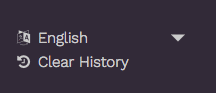

Learn est complètement compatible avec le mode multi-langue d’Hugo.
Il fournit :

Après avoir appris comment Hugo gère les sites multi-langue, définissez vos langues dans votre fichier config.toml.
Par exemple, pour ce site, avec du contenu en français et en anglais.
# Anglais est la langue par défaut
defaultContentLanguage = "en"
# Force d'avoir /en/ma-page et /fr/ma-page routes, même avec la langue par défaut.
defaultContentLanguageInSubdir= true
[Languages]
[Languages.en]
title = "Documentation for Hugo Learn Theme"
weight = 1
languageName = "English"
[Languages.fr]
title = "Documentation du thème Hugo Learn"
weight = 2
languageName = "Français"
Puis, pour chaque nouvelle page, ajoutez l’id de la langue du fichier.
my-page.md est découpé en deux fichiers :
my-page.en.mdmy-page.fr.md_index.md est découpé en deux fichiers :
_index.en.md_index.fr.mdAttention, seulement les pages traduites sont affichées dans le menu. Le contenu n’est pas remplacé par les pages de la langue par défaut.
Utilisez le paramètre du Front Matter slug pour traduire également les URLs.
Les Translations strings sont utilisées comme valeurs par défaut dans le thème (Bouton Modifier la page, Element de subsitution Recherche, etc.). Les traductions sont disponibles en français et en anglais mais vous pouvez utiliser n’importe quelle autre langue et surcharger avec vos propres valeurs.
Pour surcharger ces valeurs, créer un nouveau fichier dans votre dossier i18n local i18n/<idlanguage>.toml et inspirez vous du thème themes/hugo-theme-learn/i18n/en.toml
D’ailleurs, ces traductions pour servir à tout le monde, donc svp prenez le temps de proposer une Pull Request !
Vous pouvez changer de langue directement dans le navigateur. C’est une super fonctionnalité, mais vous avez peut-être besoin de la désactiver.
Pour ce faire, ajouter le paramètre disableLanguageSwitchingButton=true dans votre config.toml
[params]
# Quand vous utilisez un site en multi-langue, désactive le bouton de changment de langue.
disableLanguageSwitchingButton = true